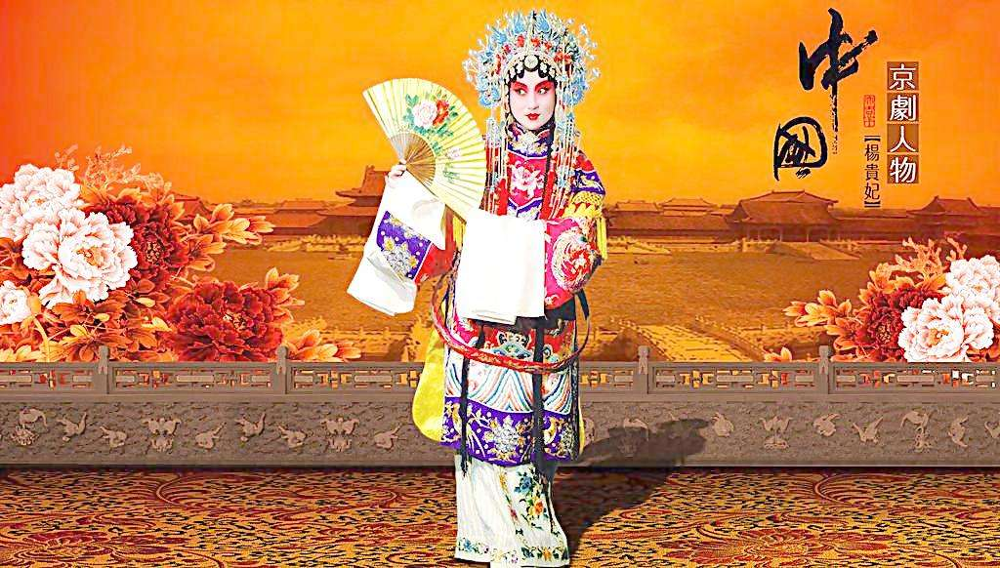
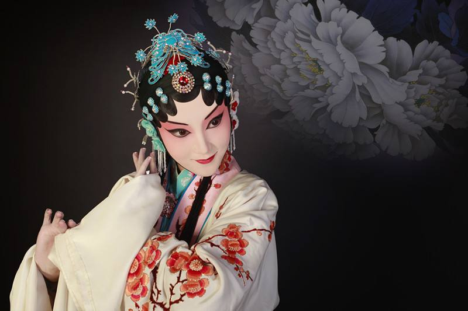

京剧
作者：cindy 日期：2017-5-16
京剧舞台艺术在文学、表演、音乐、唱腔、锣鼓、化妆、脸谱等各个方面，通过无数艺人的长期舞台实践，构成了一套互相制约、相得益彰的格律化和规范化的程式。它作为创造舞台形象的艺术手段是十分丰富的，而用法又是十分严格的。不能驾驭这些程式，就无法完成京剧舞台艺术的创造。由于京剧在形成之初，便进入了宫廷，使它的发育成长不同于地方剧种。要求它所要表现的生活领域更宽，所要塑造的人物类型更多，对它的技艺的全面性、完整性也要求得更严，对它创造舞台形象的美学要求也更高。当然，同时也相应地使它的民间乡土气息减弱，纯朴、粗犷的风格特色相对淡薄。
因而，它的表演艺术更趋于虚实结合的表现手法，最大限度地超脱了舞台空间和时间的限制，以达到“以形传神，形神兼备”的艺术境界。表演上要求精致细腻，处处入戏；唱腔上要求悠扬委婉，声情并茂；武戏则不以火爆勇猛取胜，而以“武戏文唱”见佳。
表现手法
京剧表演的四种艺术手法：唱、念、做、打，也是京剧表演四项基本功。
唱指歌唱，念指具有音乐性的念白，二者相辅相成，构成歌舞化的京剧表演艺术两大要素之一的“歌”，做指舞蹈化的形体动作，打指武打和翻跌的技艺，二者相互结合，构成歌舞化的京剧表演艺术两大要素之一的“舞”。
戏曲演员从小就要从这四个方面进行训练，虽然有的演员擅长唱功（唱功老生），有的行当以做功（花旦）为主，有的以武打为主（武净）。但是要求每一个演员必须有过硬的唱、念、做、打四种基本功。只有这样才能充分地发挥京剧的艺术特色。更好地表现和刻画戏中的各种人物形象。
京剧有唱，有舞，有对白，有武打，有各种象征性的动作，是一种高度综合性的艺术。
行当分类
京剧行当的划分，除依据人物的自然属性（性别、年龄）和社会属性（身份、职业）外，主要是按人物的性格特征来分类。京剧班社旧有“七行七科”之说 ：七行即生行、旦行（亦称占行）、净行、丑行、杂行、武行、流行。
京剧舞台上的一切都不是按照生活里的原貌出现的。京剧舞台上的角色也不是按照生活当中人的本来面貌出现的，而是根据所扮演角色的性别、性格、年龄、职业以及社会地位等，在化妆、服装各方面加以若干艺术的夸张，这样就把舞台上的角色划分成为生、旦、净、丑四种类型。这四种类型在京剧里的专门名词叫做“行当”。
生
除了花脸以及丑角以外的男性正面角色的统称，分老生（又分重唱的安工老生，重做的衰派老生，重武的靠把老生）、武生（分长靠武生、短打武生并应工猴儿戏）、小生（分扇子生、雉尾生、穷生、武小生） 、红生 、娃娃生。
旦
女性正面角色的统称，分青衣（正旦）、花旦、闺门旦、刀马旦、武旦、彩旦。
净
俗称花脸，大多是扮演性格、品质或相貌上有些特异的男性人物，化妆用脸谱，音色洪亮，风格粗犷。“净”主要分为文净、武净两大类。文净又分正净（重唱功，称铜锤花脸、黑头）、副净（重工架表演，称架子花脸），武净分重把子工架的武花、重跌扑摔打的武花（也被称为摔打花脸）、油花（一称毛净）。
丑
扮演喜剧角色，因在鼻梁上抹一小块白粉，俗称小花脸。分文丑（分方巾丑、袍带丑、老丑、荣衣丑，并兼演彩旦、婆子）、武丑（又称开口跳）等。各个行当都有一套表演程式，在唱念做打的技艺上各具特色。